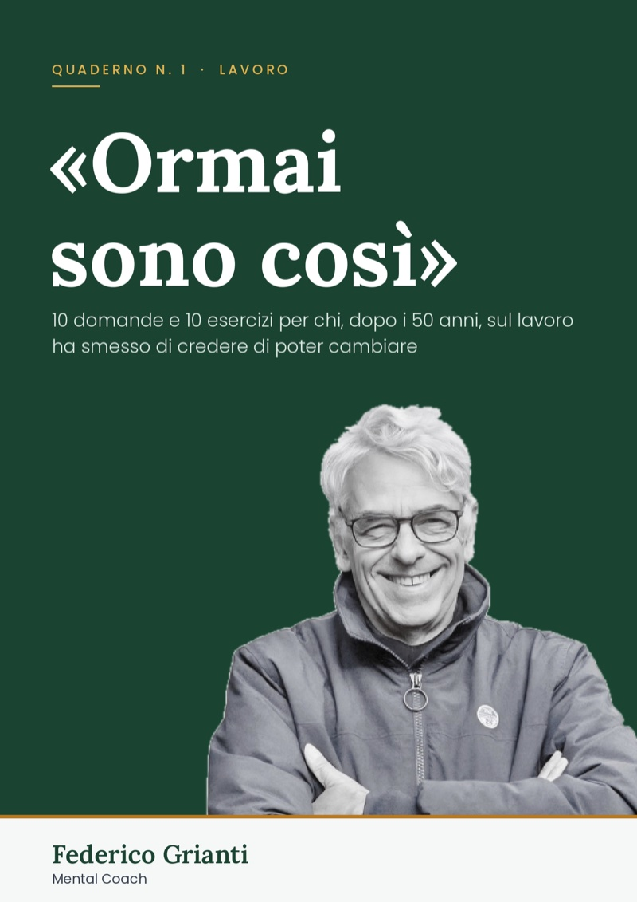

Quaderno n. 1 · Lavoro
Fatto, sei in lista.
Il quaderno esce a fine ottobre. Ti arriva via email, all'indirizzo che hai appena lasciato, senza che tu debba fare altro.
Nell'attesa, un regalo
Il test «Carico o età?»: dodici domande per capire da dove parte quello che hai cominciato a notare. Quattro minuti.
↓ Scarica il testE una domanda per te
Quale frase «ormai» ti dici più spesso al lavoro?
Se ti va, scrivimela a coaching@federicogrianticoach.com. Le risposte le leggo io, una per una.
Perché il quaderno non finisca nello spam, aggiungi coaching@federicogrianticoach.com ai tuoi contatti. Se usi Gmail, controlla anche la scheda «Promozioni».